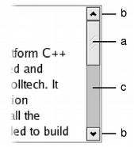

QScrollBar Class
The QScrollBar widget provides a vertical or horizontal scroll bar. More...
| Header: | #include <QScrollBar> |
| CMake: | find_package(Qt6 REQUIRED COMPONENTS Widgets) target_link_libraries(mytarget PRIVATE Qt6::Widgets) |
| qmake: | QT += widgets |
| Inherits: | QAbstractSlider |
Public Functions
| QScrollBar(QWidget *parent = nullptr) | |
| QScrollBar(Qt::Orientation orientation, QWidget *parent = nullptr) | |
| virtual | ~QScrollBar() |
Reimplemented Public Functions
Protected Functions
| virtual void | initStyleOption(QStyleOptionSlider *option) const |
Reimplemented Protected Functions
| virtual void | contextMenuEvent(QContextMenuEvent *event) override |
| virtual void | hideEvent(QHideEvent *) override |
| virtual void | mouseMoveEvent(QMouseEvent *e) override |
| virtual void | mousePressEvent(QMouseEvent *e) override |
| virtual void | mouseReleaseEvent(QMouseEvent *e) override |
| virtual void | paintEvent(QPaintEvent *) override |
| virtual void | sliderChange(QAbstractSlider::SliderChange change) override |
| virtual void | wheelEvent(QWheelEvent *event) override |
Detailed Description
A scroll bar is a control that enables the user to access parts of a document that is larger than the widget used to display it. It provides a visual indication of the user's current position within the document and the amount of the document that is visible. Scroll bars are usually equipped with other controls that enable more accurate navigation. Qt displays scroll bars in a way that is appropriate for each platform.
If you need to provide a scrolling view onto another widget, it may be more convenient to use the QScrollArea class because this provides a viewport widget and scroll bars. QScrollBar is useful if you need to implement similar functionality for specialized widgets using QAbstractScrollArea; for example, if you decide to subclass QAbstractItemView. For most other situations where a slider control is used to obtain a value within a given range, the QSlider class may be more appropriate for your needs.
 | Scroll bars typically include four separate controls: a slider, scroll arrows, and a page control.
|
Each scroll bar has a value that indicates how far the slider is from the start of the scroll bar; this is obtained with value() and set with setValue(). This value always lies within the range of values defined for the scroll bar, from minimum() to maximum() inclusive. The range of acceptable values can be set with setMinimum() and setMaximum(). At the minimum value, the top edge of the slider (for a vertical scroll bar) or left edge (for a horizontal scroll bar) will be at the top (or left) end of the scroll bar. At the maximum value, the bottom (or right) edge of the slider will be at the bottom (or right) end of the scroll bar.
The length of the slider is usually related to the value of the page step, and typically represents the proportion of the document area shown in a scrolling view. The page step is the amount that the value changes by when the user presses the Page Up and Page Down keys, and is set with setPageStep(). Smaller changes to the value defined by the line step are made using the cursor keys, and this quantity is set with setSingleStep().
Note that the range of values used is independent of the actual size of the scroll bar widget. You do not need to take this into account when you choose values for the range and the page step.
The range of values specified for the scroll bar are often determined differently to those for a QSlider because the length of the slider needs to be taken into account. If we have a document with 100 lines, and we can only show 20 lines in a widget, we may wish to construct a scroll bar with a page step of 20, a minimum value of 0, and a maximum value of 80. This would give us a scroll bar with five "pages".
 | The relationship between a document length, the range of values used in a scroll bar, and the page step is simple in many common situations. The scroll bar's range of values is determined by subtracting a chosen page step from some value representing the length of the document. In such cases, the following equation is useful: document length = maximum() - minimum() + pageStep(). |
QScrollBar only provides integer ranges. Note that although QScrollBar handles very large numbers, scroll bars on current screens cannot usefully represent ranges above about 100,000 pixels. Beyond that, it becomes difficult for the user to control the slider using either the keyboard or the mouse, and the scroll arrows will have limited use.
ScrollBar inherits a comprehensive set of signals from QAbstractSlider:
- valueChanged() is emitted when the scroll bar's value has changed. The tracking() determines whether this signal is emitted during user interaction.
- rangeChanged() is emitted when the scroll bar's range of values has changed.
- sliderPressed() is emitted when the user starts to drag the slider.
- sliderMoved() is emitted when the user drags the slider.
- sliderReleased() is emitted when the user releases the slider.
- actionTriggered() is emitted when the scroll bar is changed by user interaction or via the triggerAction() function.
A scroll bar can be controlled by the keyboard, but it has a default focusPolicy() of Qt::NoFocus. Use setFocusPolicy() to enable keyboard interaction with the scroll bar:
- Left/Right move a horizontal scroll bar by one single step.
- Up/Down move a vertical scroll bar by one single step.
- PageUp moves up one page.
- PageDown moves down one page.
- Home moves to the start (minimum).
- End moves to the end (maximum).
The slider itself can be controlled by using the triggerAction() function to simulate user interaction with the scroll bar controls. This is useful if you have many different widgets that use a common range of values.
Most GUI styles use the pageStep() value to calculate the size of the slider.
See also QScrollArea, QSlider, QDial, QSpinBox, and Sliders Example.
Member Function Documentation
[explicit] QScrollBar::QScrollBar(QWidget *parent = nullptr)
Constructs a vertical scroll bar.
The parent argument is sent to the QWidget constructor.
The minimum defaults to 0, the maximum to 99, with a singleStep size of 1 and a pageStep size of 10, and an initial value of 0.
[explicit] QScrollBar::QScrollBar(Qt::Orientation orientation, QWidget *parent = nullptr)
Constructs a scroll bar with the given orientation.
The parent argument is passed to the QWidget constructor.
The minimum defaults to 0, the maximum to 99, with a singleStep size of 1 and a pageStep size of 10, and an initial value of 0.
[virtual noexcept] QScrollBar::~QScrollBar()
Destroys the scroll bar.
[override virtual protected] void QScrollBar::contextMenuEvent(QContextMenuEvent *event)
Reimplements: QWidget::contextMenuEvent(QContextMenuEvent *event).
[override virtual] bool QScrollBar::event(QEvent *event)
Reimplements: QAbstractSlider::event(QEvent *e).
[override virtual protected] void QScrollBar::hideEvent(QHideEvent *)
Reimplements: QWidget::hideEvent(QHideEvent *event).
[virtual protected] void QScrollBar::initStyleOption(QStyleOptionSlider *option) const
Initialize option with the values from this QScrollBar. This method is useful for subclasses when they need a QStyleOptionSlider, but don't want to fill in all the information themselves.
See also QStyleOption::initFrom().
[override virtual protected] void QScrollBar::mouseMoveEvent(QMouseEvent *e)
Reimplements: QWidget::mouseMoveEvent(QMouseEvent *event).
[override virtual protected] void QScrollBar::mousePressEvent(QMouseEvent *e)
Reimplements: QWidget::mousePressEvent(QMouseEvent *event).
[override virtual protected] void QScrollBar::mouseReleaseEvent(QMouseEvent *e)
Reimplements: QWidget::mouseReleaseEvent(QMouseEvent *event).
[override virtual protected] void QScrollBar::paintEvent(QPaintEvent *)
Reimplements: QWidget::paintEvent(QPaintEvent *event).
[override virtual] QSize QScrollBar::sizeHint() const
Reimplements an access function for property: QWidget::sizeHint.
[override virtual protected] void QScrollBar::sliderChange(QAbstractSlider::SliderChange change)
Reimplements: QAbstractSlider::sliderChange(QAbstractSlider::SliderChange change).
[override virtual protected] void QScrollBar::wheelEvent(QWheelEvent *event)
Reimplements: QAbstractSlider::wheelEvent(QWheelEvent *e).